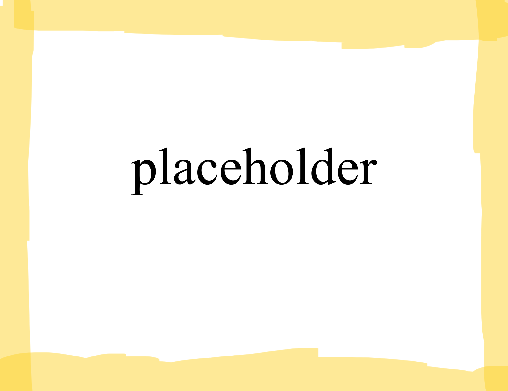

Lorn eiu internetten-officiel deu OlferzTrubeleuvFiskiti
This is an official website of the TribalKingdomofFishCity
Getkartof zutene: Engeleise
Current language: English

Figure 1: A placeholder image that is used to test float tag.
Prime Minister of Fish City
The current Prime Minister of Fish City is Mr. Angus Loreau Bagpipes. He has served since January 1st, 2021, and won reelection in the 2022 and 2024 parlimentary elections against Conservative nominee Axel Landjarges. As leader of the liberal party, he is the current prime minister, as his party maintained a parliamentary majority in 2022 and 2024.
For more information, visit the resources tabs, where helpful links may be found.
Lorn eiu internetten-officiel deu OlferzTrubeleuvFiskiti
This is an official website of the TribalKingdomofFishCity
Getkartof zutene: Fisis
Current language: Fishish
Figure 1: A placeholder image that is used to test float tag.
Ministre Primile du Fiskiti
Ekt ministre primile zutene du Fiskiti er Sir Angus Loreau Bagpipes. Esurv affregir seu Un de Jonorare 2021 ge vironi vladekriisten e kriistens paarlimentas 2022 ge 2024 ouglobir frestkommen Conservative Axel Landjarges. E halutenso de truibel Liberal, elket minister primile zutene, four se truibe paarliamental sumphrane insutrone e 2022 ge 2024.